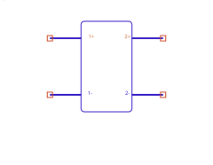
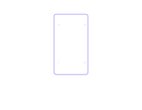

The SDD (Symbolically-Defined Device)
circuitRF's user-authored nonlinear device. You write each port's current (and charge) as an equation in the port voltages; the engine differentiates it automatically and balances it like any built-in device. It is how the FET models in the examples are defined, and the extension point for any nonlinearity the built-in parts don't cover.


What an SDD is
Instead of compiled physics, an SDD defines a device's terminal behavior with expressions. Per port, you write the port current (and optionally charge) as a function of the port voltages. The engine evaluates those expressions in the time domain, differentiates them by automatic differentiation for the Jacobian, and solves them in DC, harmonic balance, and S-parameters. The equation notation deliberately mirrors other simulators' SDD/EDD so reference models transcribe directly.
Ports & nets (2N differential pins)
An N-port SDD binds 2N nets, in +/− pairs: p1+ p1− p2+ p2− … pN+
pN−. The port count is half the net count. The voltage the equations see for port p is the
differential _vp = V(p+) − V(p−). An odd net count — or an equation referencing a port beyond
the nets supplied — is a setup error (named, never silently truncated). Terminal names follow
the FET convention for 2–4 ports (g d, g d s, g d s t).
SDD:X1 p1+ p1− I[1,0]=_v1/50 ; a 50 Ω conductance at port 1
SDD:X2 g 0 d 0 I[1,0]=… I[2,0]=… ; a 2-port (FET-style), each port's minus to groundEquation variables
Inside an SDD equation you may reference:
| Variable | Meaning |
|---|---|
_v1 … _vN | The differential port voltages (the device's own ports). |
_c1 … _cM | Control currents — the current flowing in another device, bound via C[n] (see below). |
| scope variables | Any named parameter/variable in scope (model coefficients B, Sc, TV0, …). |
freq | The frequency global (Hz) — used only in weighting-function H[w] expressions, never in the time-domain current/charge equations. |
SDD equations are real-only (real time-domain voltages → real current/charge); the
imaginary unit j is not allowed in an I[p,w]/Q[p] expression. The full
function set and operators are the shared expression language.
The equations: I[p,w], Q[p]
The core assignment is I[p,w] — the contribution to port p's
current through weighting function w:
p— the 1-based port index.w— the weighting-function index:0,1, or a user-definedw ≥ 2.
Single-index shorthand: I[p] ≡ I[p,0] (a memoryless current);
Q[p] ≡ I[p,1] (a charge — the capacitive path). The two-index forms always work
too.
Each expression is parsed once and evaluated per time sample in dual arithmetic, so the value
and its derivatives (the conductance/capacitance the solver needs) come out together. Domain
errors (e.g. log/sqrt of a non-positive argument on an overshooting solver
iterate) clamp and warn rather than killing the solve.
Weighting functions H[w]
A weighting function H[w](ω) is a frequency-domain multiplier applied to the spectrum of
I[p,w]. The total port current sums over all weights:
i_p(t) = Σ_w IFT{ H[w](ω) · FT{ I[p,w]( v(t) ) } }That is: evaluate I[p,w] in the time domain, transform, scale each frequency
by H[w](ω) (evaluated in the frequency domain), sum, transform back. This split
is the whole point — it lets a memoryless voltage expression acquire frequency-dependent (reactive,
dispersive) behavior.
The two built-in weights
H[0] = 1(identity) —I[p,0]contributes its spectrum unchanged: a memoryless/conductive current. This is theI[p]path.H[1] = jω(time derivative) — assigning a charge here,I[p,1] = Q(v), yields the currenti = dQ/dt: the capacitive path. (At DC,ω = 0, so charge passes no DC current — exactly as a capacitor should.) This is theQ[p]path.
User-defined weights H[w], w ≥ 2
Higher weights are SDD parameters, declared as expressions of freq (ω = 2π·freq):
SDD:X1 p1+ p1− I[1,2]=_v1 H[2]=1/(1 + j*2*pi*freq*tau) tau=1nHere I[1,2] = _v1 is scaled in the frequency domain by a single-pole low-pass H[2]
— a port current that is the voltage filtered by a first-order RC response. H[w] is shared across
all ports; an I[p,w] whose H[w] is undeclared is a setup error naming the missing
weight.
For a charge Q(V), one assignment on the H[1]=jω (charge) path gives
i = dQ/dt:
SDD:X1 c+ c− I[1,1] = 10e-12*_v1 − 0.75e-12*_v1^2 + (0.1e-12/3)*_v1^3This is physically identical to the dedicated NonlinearC device (the compiled fast path). See also the C–V Editor.
Control currents — referencing another device's current
An SDD equation can reference the current flowing in another device and use it like any
other variable — the current-controlled complement to the voltage-controlled _vn. This is how
you build current mirrors, current feedback, and sensed-current behavior.
Binding a control current
Two instance parameters declare the reference; the equation then reads it as _cn:
C[n] = <instance> ; bind _cn to the current in device <instance>
Cport[n] = <port> ; (multi-port referenced devices only) which port's currentnis the 1-based control index —C[1]defines_c1,C[2]defines_c2, …<instance>is the instance name of a sibling device in the same schematic (no cross-hierarchy paths in this release).Cport[n]is required only for multi-port referenced devices (SnP, ZnP); omit it (or set 1) for two-terminal devices.- Every
_cnused in an equation must have a matchingC[n], or it is a setup error naming the missing index.
Which devices' current can be sensed
| Device | Cport needed? | What _cn is |
|---|---|---|
DC voltage source (Vdc) | no | source branch current |
Tone source (VTone) | no | source branch current |
Current probe (IProbe) | no | the probed series current |
Inductor (L) | no | inductor branch current |
Touchstone N-port (SnP) | yes | the selected port's current |
Impedance N-port (ZPort) | yes | the selected port's current |
Sign convention
_cn carries the branch-current sign of the referenced device: current flows from the device's
first net to its second. For an IProbe:IP1 a b, _cn > 0 means
conventional current flows a → b through the probe. If a mirror comes out inverted, flip the sign
in the equation (-beta*_c1) rather than re-wiring.
Examples
(a) Current mirror / sense-and-scale. A drain current proportional to the current sensed in an inductor:
L:Lsense nsrc nx L=1n
SDD:Xmirror g 0 d 0
I[1,0] = _v1/1e6 ; high-Z gate (a DC path for the solver)
I[2,0] = beta*_c1 ; drain current = beta × the sensed current
C[1] = Lsense ; _c1 = current in Lsense
beta = 5(b) Current-feedback transconductor. Sense a bias supply's current and fold it into a gate-controlled drain current:
Vdc:Vdd vdd 0 Vdc=5
SDD:Xcc g 0 d 0
I[2,0] = gm*_v1 - kfb*_c1 ; drain current: gm·Vgs minus feedback on supply current
C[1] = Vdd ; _c1 = current drawn from the 5 V supply
gm = 0.05
kfb = 0.1(c) Control current on the reactive path. _cn can appear in any
I[p,w], including the H[1]=jω charge path — here a current sensed in port 2 of a
Touchstone block drives a displacement-like term:
SnP:S1 in 0 out 0 File=coupler.s2p
SDD:Xq g 0 d 0
I[2,1] = tau*_c1 ; charge ∝ sensed current → current = d/dt(tau·_c1) via H[1]=jω
C[1] = S1
Cport[1] = 2 ; _c1 = current in port 2 of the S-parameter block
tau = 1nParameter summary
| Name | Meaning |
|---|---|
| NumPorts | Number of ports N (drives the 2N differential pins). Hidden. |
| I[p,w] | Port-p current contribution through weight w. I[p]=I[p,0] (current); Q[p]=I[p,1] (charge). |
| H[w] | User weighting function (w ≥ 2), an expression of freq. (H[0]=1, H[1]=jω are built in.) |
| C[n] / Cport[n] | Bind control current _cn to another device's (port's) current. |
| (scope vars) | Any named model coefficients you reference in the equations. |
Which analyses honor each feature
Every simulation type honors the SDD — DC, S-parameters, Harmonic Balance, Loadpull, and
Loadpull Pursuit. Loadpull and Loadpull Pursuit are built on the harmonic-balance engine, so the full
I[p,w] / Q[p] / H[w] behavior applies to the DUT at every termination
they evaluate.
- Nonlinear DC — full
I[p,w], charge (drops at DC), and control currents (exact — the referenced current is a solver unknown). - Harmonic Balance — full weighting sum, with the control-current Jacobian coupling for fast convergence.
- Loadpull & Loadpull Pursuit — the SDD is balanced by HB at each termination, so all SDD behavior is honored throughout the sweep/search.
- S-parameters — small-signal linearization at the DC bias, including the
control-current coupling. A nonlinear capacitor reduces to
jω·C(0), matching NonlinearC.
Note on control currents specifically: the _cn control-current path is wired for
single-tone HB; multi-tone / two-tone control-current coupling is a follow-on. The SDD's own current/charge
equations are honored in all analyses regardless.
See also: Components › SDD (the symbol + at-a-glance
parameters) · Dynamic symbols (how the pin count grows) ·
Expressions (the language) · Netlist format (a
worked GaN-FET SDD). Full design: docs/design/sdd.md + docs/design/sdd-control-current.md.